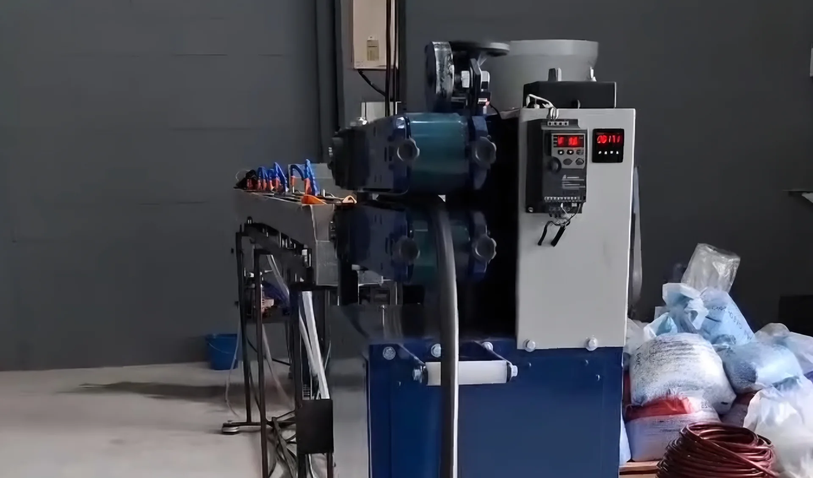

Missão
Desenvolver mangueiras resistentes e funcionais, oferecendo soluções confiáveis para diferentes aplicações e necessidades.
Conheça a estrutura, os princípios e o trabalho por trás de cada mangueira produzida pela DropTech.


A DropTech Mangueiras atua no desenvolvimento de soluções para irrigação, jardinagem e uso geral, com atenção à resistência, flexibilidade e praticidade de cada produto.
Com fabricação própria, acompanhamos o processo produtivo de perto: da escolha dos materiais à preparação final para entrega. Essa proximidade permite manter padrão, melhorar continuamente e atender cada necessidade com mais segurança.
Mais do que fabricar mangueiras, buscamos construir relações confiáveis e produtos que cumpram bem sua função.
Desenvolver mangueiras resistentes e funcionais, oferecendo soluções confiáveis para diferentes aplicações e necessidades.
Ser reconhecida pela qualidade dos produtos, pela proximidade no atendimento e pela evolução constante da produção.
Princípios que aparecem tanto na fabricação quanto no relacionamento com clientes e parceiros.
Espaços preparados para organizar as etapas de fabricação, controle, armazenamento e preparação dos produtos.


Fale diretamente com a DropTech e encontre a solução mais adequada para sua necessidade.